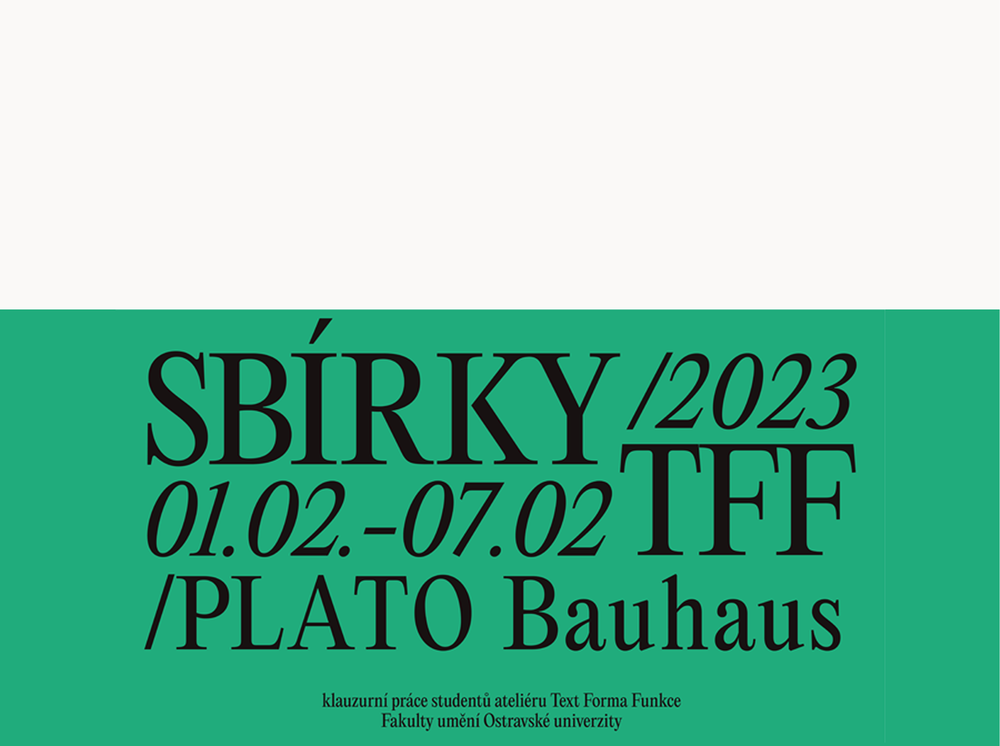

Sbírky, 2023
As part of the visual identity system, a series of posters was created for the student exhibition at the PLATO Bauhaus Gallery. The project also included designs for online promotion, spatial navigation, name tags, labels, and other visual orientation elements. The entire system is based on the principles of archiving, inspired by the structure of paper bookmarks, inventory labels, and cataloging systems.


